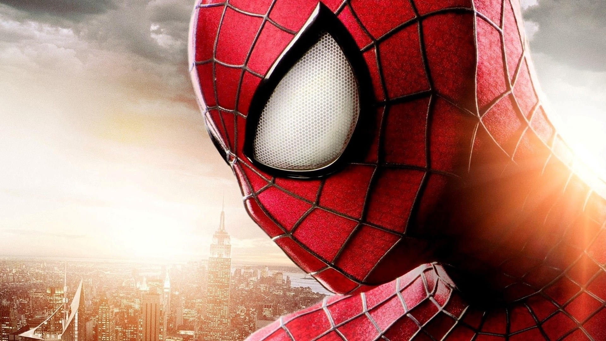

Best Movie 2014

Chris Ramos 10-8-14
Oh this is easy. GAURDIANS OF THE FREAKING GAlAXY!!! ok. you can go on with your lives...
Still here? K. Well for starters, there were some other really, REALLY great movies; Captain America: The Winter Soldier, The Lego Movie, Dawn of the Planet of the Apes, X-Men: Days of Future Past, and last, but most certainly NOT least, How to Train Your Dragon 2 (runner up in my opinion). What Guardians of the Galaxy did was extraordinary. It took us out of this world and told as a story about a spy, a smuggler, a revenge fueled maniac, a tree, and a raccoon. You should all be applauding Marvel's courage right now. What's truly amazing, is that the movie was fantastic. The chemistry between the characters was perfect, comedy was present, character development made sense and felt rewarding, and the world felt real. It's so good I almost want to compare it to Star Wars, but can't. Honestly the only flaw I found with this movie is that the villain wasn't that great. I would compare it to the villain for Thor 2 where he just kinda came in and left by the end of the movie. And the only other thing I would be upset about is that the Nova Core wasn't as prominent as it probably would've been, but that's just my inner nerd talking. Seriously though, this movie attracts a freaking large audience. It's almost scary how many people could enjoy it. It's got a bit of romance, a whole lot of comedy, action, and story to get people wanting a lot more adventures from the now loved Guardians of the Galaxy.
All Spider-Man Movies and The Spectacular Spider-Man
By Chris Ramos 10/8/14
The Movies suck, the show is life. Not even going to lie, after watching the Spectacular Spider-Man, I can no longer sit through any of the films. Simply put, the Spectacular Spider-Man seems to be the only on screen representation of Spider-Man that is consistent with its protagonist, has relationships that make sense, and has all the respect in the world for the source material.
In the Amazing Spider-Man 1, I can't for the life of me tell you who Peter Parker is because of how often his character changes. One moment he's brave and confident and stands up to bullies, the next he's shy, then he's nerd, curious about his past, a jerk to his aunt, flirty. At least this is where the first Spider-Man trilogy does well. Peter Parker is a shy nerd who takes pictures for the Daily Bugle. Due to not being used to large changes in his life, he takes his powers and uses them for personal gain but through the loss and inspiring words from his uncle, learns responsibility. This is what made the first Spider-Man trilogy fun because he was a young relatable teenager with struggles like everybody else.
Where I believe the first three films fail and TASM 1 and 2 succeed (sort of) is in the main boyfriend girlfriend relationship. I don't buy it. I don't really know how to elaborate further but it's pretty simple. It makes no sense why MJ likes Peter. Because the plot requires it? Who knows? In TASM 1 and 2 it's almost the same story but they at least have something in common, they're both nerds! But they never even go on a date or have a conversation about something they're both interested in! It feels forced and it only seems real because of how well the actors bounce off each other.
Let's talk about The Amazing Spider-Man 2. WOW! Did they learn nothing from Spider-Man 3? There is so much going on that it feels like nothing is actually progressing by the end of the movie. Let's count all the stories we have to follow:
- The Peter and Gwen relationship
- Peter and Harry
- Peter and aunt May
- Peter and his parents
- Gwen going to college
- Harry and Norman
- Harry and Oscorp
- Max Dillon and Oscorp
- Rhino
What's worse is that they put a ton of focus on future movies and spin offs with little teases and easter eggs. There is almost no character development at all that doesn't come from a death in this movie. When Harry found out about the experiments at Ravencraft he seemed really upset and I thought he actually cared for the people there. NOPE! The very thought of that is dropped within the same scene. Max Dillon for no reason goes from being a very nerdy scientist to a badass with a deeper voice for no reason. Character development? Not in the slightest. Ok, this next thing is a bit one. The one thing that killed this movie completely for me. In the beginning Peter says he can't be with Gwen anymore because he loved her and he thought it was for the best so she wouldn't get hurt. She gets extremely pissed off at the choice he makes and they break up. Later, in a maintenance closet, Peter kisses her to show her he doesn't care anymore and wants to be with her no matter what. She is completely aware of this. Then, when she's accepted into the college of her dreams, she leaves a message to Peter saying she was leaving because it would be easiest and that it was because she didn't love him, but because she did. WHAT THE F#$@!!! That's why he broke up with you in the first place and you got pissed but it's completely ok for you to do it? No. F@$# me. Ok, I got that out of my system. I have more things to complain about but I'll just move on to some of the aspects of the movie I liked. Well the only thing I liked at all. Throughout the movie it is clear that aunt May felt unloved because of how much Peter was focusing on his dead parents than on her. And the absolute best scene of the movie was when the actor played her heart out and showed every emotion possible when she yelled at Peter for not acknowledging all the work she did raising him. Ok one more complaint. PETER THEN CONTINUES TO ASK FOR INFORMATION ON HIS PARENTS!!!!!
I'm done.
Oh wait. I wanted to talk more about the Spectacular Spider-Man. Unlike TASM 1 and 2 and Spider-Man 3, this show has the most wonderful pacing of any show I have ever seen. Every aspect is handled with care and attention. All the side relationships are handled nicely too. Lake me take a second to talk about J Jonah Jameson. He's AWESOME! In the episode where the venom symbiote is introduced, JJJ's son, who is an astronaut, is returning from a space mission and is set to land on earth. His spaceship is hit on its decent and the computer guidance system fails forcing JJ's son to perfectly land the ship or else the passengers will die. I can't believe how much emotion I felt for this animated character when he might have lost his son. The only complaint I have is how little Peter and Gwen talk to each other at the beginning of the first season. I recommend this show to anyone but at the say time warn you. The show was canceled after season 2 due to Disney obtaining the show rights. Disney could've chosen to continue the show but felt that it wasn't as child friendly for their tastes. And thus the birth of Ultimate Spider-Man! Kill me. Anyways, the show ends on a cliffhanger that will never ever get resolved.
I don't really know how to conclude so I'll end with a message to Sony. Sony, give up the movie rights to Marvel or get your act together. First step, hire the writers from the Spectacular Spider-Man show, place Peter Parker in a high school setting, and start over. We don't need another origin story; we're done looking into the past. Time to look forward.